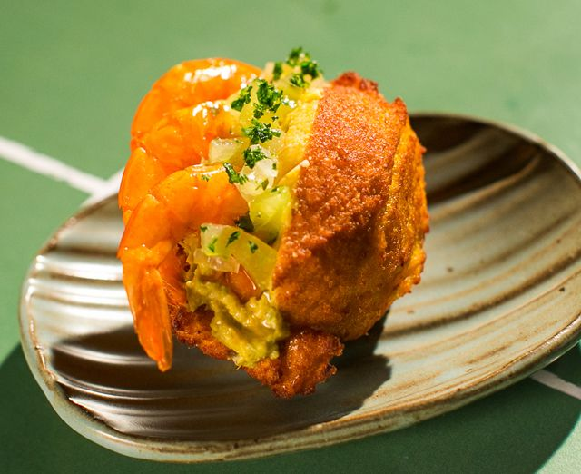
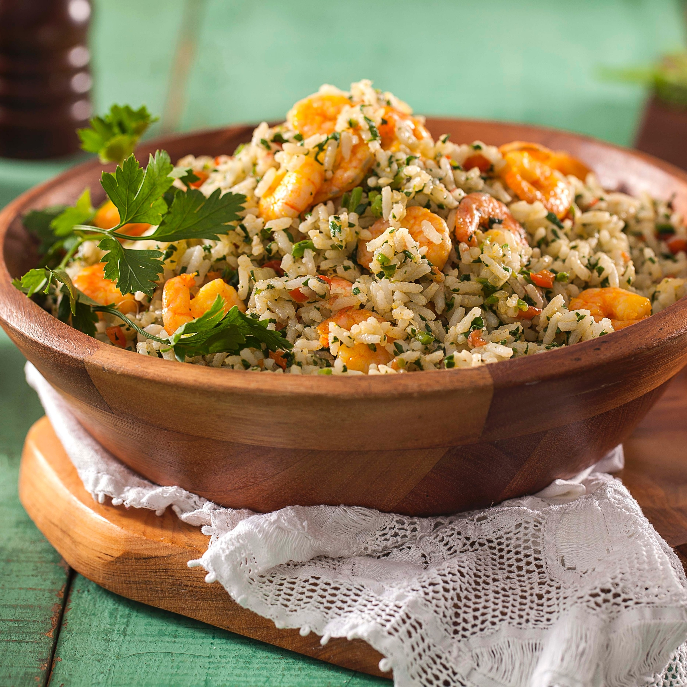
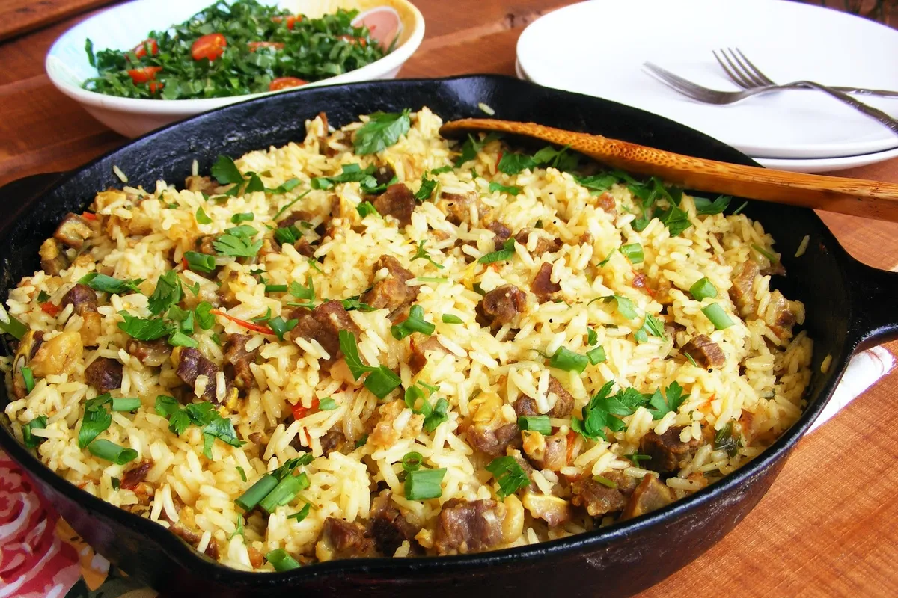
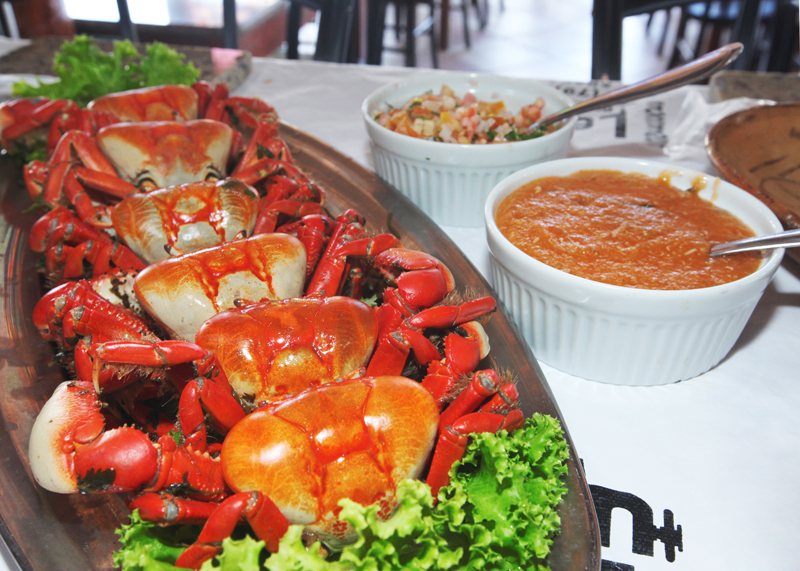
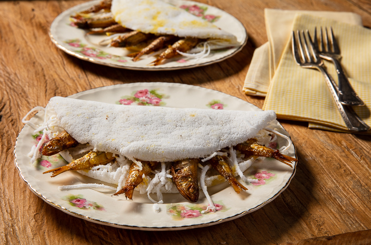
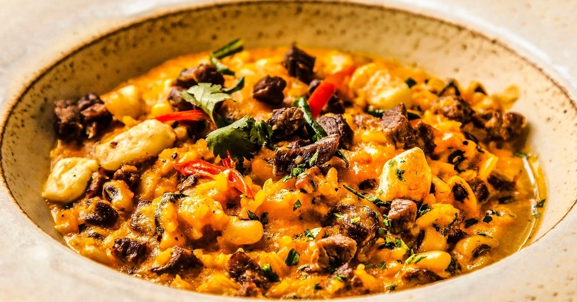
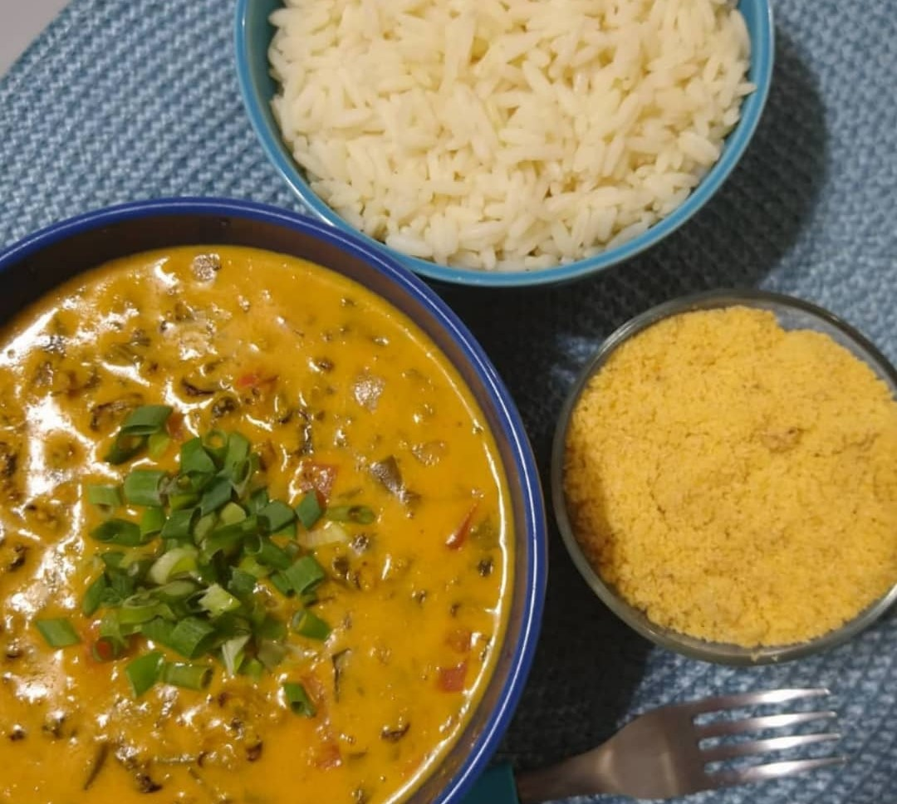

Pratos típicos do Nordeste.
As mais saborosas iguarias da região.
Acarajé.

Arroz de Cuxa.

Arroz Maria-Isabel.

Baião de Dois.
Bolo de Rolo.
Caranguejo.

Ginga com Tapioca.

Rubacão.

Sururu ao coco.
